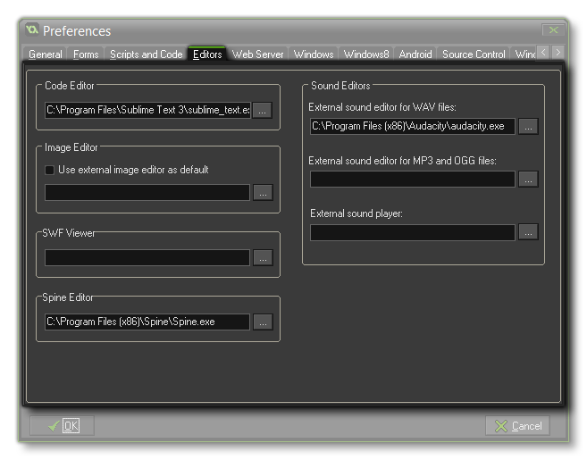

 It may be that when making games you are more accustomed to using another suite of tools, and that you really only want to use GameMaker: Studio to bring all that work together in one place. Well, thankfully, GameMaker: Studio offers you the flexibility to keep using those tools by allowing you to define them as your default editor for the chosen resource. In this way you can have an external sound editor, or image editor etc... that will open instead of the default one whenever you open the specific resource for editing.
Here you can choose whether to use the built-in code editor (highly recommended) or an external editor. In the case of an external editor, the script text is saved as a *.txt file and the editor is called with this file as an argument. After editing it you should save the file and close the editor such that GameMaker: Studio can read the file back in.
You can also choose whether to use the built-in image editor or an external editor. In the case of an external editor, the image is saved as a *.png file and the editor is called with this file as an argument. After editing it you should save the file and close the editor such that GameMaker: Studio can read the file back in.
You can indicate the different external editors for the sound
files you want to use asGameMaker: Studio does not contain
internal sound editors yet. There are two possible editors, one
each for handling .wav and .mp3 files. In the case of an external
editor, the sound is saved as a *.wav or *.mp3
file and the corresponding editor is called with this file as an
argument. After editing it you should save the file and close the
editor such that GameMaker: Studio can read the file back
in.
You can also set your own player to play back the sounds that you
add to your game by setting the path in the External Sound
Player option. After setting this, when you press the "Play"
button in the sound editor window, it will use the program linked
here instead of the built in playback device.
This option for the tab permits you to define an external viewer
for any SWF sprites that you have imported into GameMaker:
Studio. This can simply be set to Internet Explorer or some
other browser, or you can set it to any other program that
correctly reads and shows the format. Once this is set, you can
click the Show Sprite button in the Sprite
Editor and it will launch the chosen program to show the
complete vector animation.
This final option for the Editor tab permits you to point
GameMaker: Studio to the location of your Spine
binaries. In this way you can click the Show Sprite button
in the Sprite
Editor and it will launch Spine to show the selected Skeletal
Animation and permit you to edit it.